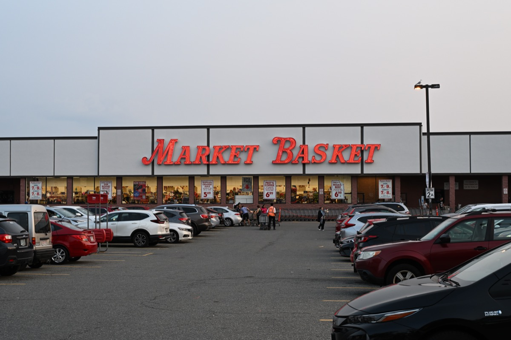

If you just moved to Boston, there is a good chance you arrived within a week of September 1, that your U-Haul got stuck behind another U-Haul on Commonwealth Avenue, and that someone has already told you the T is "not that bad." All three are Boston traditions. So is the feeling, somewhere around day ten, that the city is running on rules everyone else learned in childhood: which grocery store, which direction is "inbound," why nobody will explain what a packie is.
This is the guide we wish someone had handed us at the door. It covers the first 30 days in the order you will actually need them: getting a CharlieCard and learning the T, which neighborhood you landed in and what that means, surviving the September 1 lease turnover, where to buy food, how to see a doctor, converting your license at the RMV, parking without losing your car to street cleaning, and what to buy before the first snow. Then the good part: the handful of things every new Bostonian should do in month one, how to meet people, a glossary, and a 30-day checklist you can work down.
Everything here is walkable or on the T, with addresses and stops. Where a fee or rule changes often (fares, permit prices, RMV documents), we say to check the current version rather than guess. Welcome. It gets easier, and then it gets good.
The short answer
The 10 things to do in your first week in Boston
- Get a CharlieCard and load a 7-day pass
- Learn the four subway lines and which direction is inbound
- Figure out what your neighborhood is known for
- Find your Market Basket or Trader Joe's
- Apply for a resident parking permit if you have a car
- Book an RMV appointment to convert your license
- Pick a primary care doctor before you need one
- Walk the Freedom Trail one weekend morning
- Watch a sunset from the Esplanade
- Go to one recurring thing, like trivia or a run club
01
The T: getting a CharlieCard and how the subway works
The MBTA, universally "the T," is the oldest subway in the country and runs like it. It will also get you nearly everywhere you need to go in your first year, and once you understand a few quirks it is easy.
Get a CharlieCard
The CharlieCard is the plastic tap card. It is free, and you can get one at the CharlieCard Store inside Downtown Crossing station or at customer service windows in the larger stations. Load it with stored value or a pass at any fare vending machine. The T also accepts contactless credit and debit cards and phone wallets at gates and on buses at the same fare, so you can ride day one without a card. A subway ride is currently $2.40 and a bus ride $1.70, with free transfers between them; check the current fare table, it changes.
The lines, in one paragraph
The Red Line runs from Alewife through Cambridge, under the river to Downtown, and out to Dorchester and Quincy; it is the line for Harvard, MIT and Kendall. The Orange Line runs north to south from Malden through Downtown to the South End, Jamaica Plain and Forest Hills. The Blue Line goes from Downtown under the harbor to East Boston, the airport and Revere. The Green Line is a light-rail trolley with four branches (B, C, D, E) that split west of Kenmore and go to Boston College, Cleveland Circle, Riverside and Heath Street; it is slow above ground and is the line for Fenway, Back Bay, BU and Brookline. The Silver Line is a bus that behaves like a subway line for the Seaport and the airport. "Inbound" means toward Downtown (Park Street, Downtown Crossing, State, Government Center); "outbound" means away from it.
Last trains, the Commuter Rail and the bus
The T does not run all night. Last trains leave the center of the city between roughly 12:15 and 12:45am depending on the line, and on Friday and Saturday it is not much later. If you are out past 1am, you are walking, biking or in a rideshare. The Commuter Rail is a separate, zoned fare system for trips to the suburbs, Salem, Providence and the North Shore; buy tickets through the MBTA mTicket phone wallet or at the station. Buses fill the gaps the subway misses (the 1 along Mass Ave, the 66 through Allston and Brookline, the CT2 to Kendall) and the MBTA's live map shows where they are. Bluebikes, the regional bike share, is often faster than the T for trips under two miles, and an annual membership is cheaper than a month of rideshares.
A fuller breakdown is in getting around Boston.
02
Boston neighborhoods, explained for newcomers
"Boston" in conversation usually means the city plus Cambridge, Somerville and Brookline, which are separate municipalities that function as neighborhoods. Rent tiers are relative to the metro area, which is one of the three or four most expensive in the country; nothing here is cheap.
| Neighborhood | Vibe | Rent tier | T line |
|---|---|---|---|
| Allston / Brighton | Post-grad, loud, roommates, music venues, the cheapest way to live near the center | $ | Green B, 66 bus, Boston Landing CR |
| Somerville (Davis, Porter, Union) | Late 20s and 30s, restaurants, breweries, the most livable "young adult" area | $$ | Red, Green Extension |
| Cambridge (Central, Inman, Kendall) | Grad students, biotech, international, the good bookshops | $$$ | Red |
| Harvard Square | Prettier, older, pricier Cambridge | $$$ | Red |
| Fenway / Kenmore | Students, the ballpark, new high-rises | $$ | Green B, C, D |
| Back Bay | Brownstones, Newbury Street, the postcard | $$$$ | Green, Orange (Back Bay) |
| Beacon Hill | Gaslamps, cobblestones, tiny apartments, quiet | $$$$ | Red (Charles/MGH), Park St |
| South End | Restaurants, galleries, dog owners, late-20s to 40s | $$$ | Orange (Back Bay, Mass Ave) |
| South Boston (Southie) | Post-college professionals, the beach, Broadway bars | $$$ | Red (Broadway, Andrew) |
| Seaport | New, glassy, expensive, finance and biotech | $$$$ | Silver Line |
| North End | Italian, historic, tiny walk-ups, always busy | $$$ | Green/Orange (Haymarket) |
| Jamaica Plain | Leafy, community-minded, 30s, the Arboretum | $$ | Orange (Green St, Forest Hills) |
| Dorchester | Boston's largest and most diverse neighborhood, varies block by block | $ to $$ | Red, Fairmount CR |
| East Boston | Latin American food, harbor views, the airport, changing fast | $$ | Blue |
| Charlestown | Historic, quiet, the Navy Yard | $$$ | Orange (Community College), ferry |
| Brookline | Its own town: Coolidge Corner, families, good schools | $$$ | Green C, D |
The practical takeaway: if you are in your 20s and want your social life within walking distance, Allston, Somerville, Cambridge, the South End and Southie are where most of it happens. If you took a place in the Seaport or Downtown because it was near work, expect to spend a lot of time on the Red and Green Lines. Each neighborhood has a full profile in our Boston neighborhoods guide, starting with the North End, Back Bay and Harvard Square.
03
September 1: moving day and Allston Christmas
Boston does something almost no other city does: the majority of its residential leases start and end on September 1, tied to the academic calendar. That means on the last days of August and the first days of September, tens of thousands of people move at the same time. Moving trucks are booked months ahead, the streets around BU, Allston and Mission Hill jam solid, and every year at least one rental truck gets peeled open on the low bridges of Storrow Drive. (Storrow Drive has a clearance of about 10 feet; trucks are banned; the city calls it "Storrowing." Do not Storrow.)
Allston Christmas is the local name for the side effect. When thousands of leases end at once, the curbs fill with couches, desks, mirrors, bikes and lamps that people could not fit in the truck. Some of it is genuinely good. The rules of thumb: take anything wood or metal, be suspicious of anything upholstered (Boston has bedbugs), and go early on August 31 and September 1 in Allston, Brighton, Mission Hill and around Harvard and MIT. The city runs extra trash pickups those days and posts the schedule.
If you are moving in on September 1, apply for a moving truck permit from the City of Boston (or Cambridge, or Somerville) a couple of weeks in advance. It reserves curb space in front of your building with official signs and is the difference between parking your truck and double-parking it for six hours. Bring your own dolly. Do not expect an elevator. And read your lease for the Massachusetts specifics: landlords here can collect first month, last month, a security deposit and a lock change fee up front, and nothing else, so if someone asks for a "cleaning fee" or a "pet deposit," that is not legal.
One more first-week habit: register to vote and update your address with the USPS on day one, because the RMV, your bank and your employer will all want the same proof of residency within the month.
04
Groceries: Market Basket, Trader Joe's and Haymarket
Market Basket

Market Basket is a family-owned New England chain, and its Somerville store is a local institution: consistently the cheapest full-size grocery store within reach of the T, famous for its produce prices, for being mobbed on Sunday afternoons, and for the 2014 employee walkout that made national news. If you live in Somerville or Cambridge, this is your store. If you do not, a monthly trip with a friend who has a car is worth it.
Trader Joe's, Star Market, Whole Foods and the rest
Trader Joe's is the default for people living alone in Back Bay, Fenway and Brookline, and the Boylston Street store is small and crowded at 6pm on a weekday, so go at odd hours. Star Market and Shaw's are the same company and the ordinary mid-priced option. Whole Foods is everywhere and expensive. H Mart (Central Square and Burlington) is the best Asian grocery on the T, and the Super 88 food court in Allston is a cheap dinner.
Haymarket
Haymarket is an open-air produce market that has run on the same spot since the 1830s. Vendors sell fruit and vegetables that need to move that day at prices well below any store, by the bag, cash preferred. Do not touch the produce; point and let the vendor pick. It is loud, quick and the best way to eat fresh for very little. Farmers markets fill the gap for people who want local: Copley Square on Tuesdays and Fridays, Davis Square on Wednesdays, and the SoWa market in the South End on Sundays in season.
Eating out on a budget is a separate skill. See the best cheap eats in Boston.
05
Healthcare and MassHealth basics
Massachusetts requires residents to have health insurance, and it has had that rule since 2006, so the state's system is more organized than most. If your employer offers coverage, take it. If not, the Massachusetts Health Connector is the state marketplace, and depending on income you may qualify for MassHealth (the state's Medicaid program) or for subsidized ConnectorCare plans. Open enrollment runs in the fall, but moving to the state is a qualifying event that lets you enroll within 60 days of arrival. Do it in month one, because you will owe a tax penalty at the end of the year if you go uninsured.
Boston is dense with hospitals: Mass General on Beacon Hill (Charles/MGH), Brigham and Women's and Beth Israel in the Longwood medical area (Green E), Boston Medical Center in the South End (Mass Ave on the Orange Line), and Tufts near Chinatown. The practical consequence is that primary care practices at the big systems have long waits for new patients, sometimes months. Book a "new patient" appointment now, before you are sick, and consider a community health center (Fenway Health, East Boston Neighborhood Health Center, Cambridge Health Alliance), which take new patients faster and take MassHealth. For urgent but not emergency care, the CVS MinuteClinics and the hospital-run urgent care sites are far cheaper than an emergency room visit.
Pharmacy note: CVS is headquartered in Rhode Island and is on every other corner here. Transfer your prescriptions in the first week.
06
The RMV: converting your license and registering a car
Massachusetts calls it the RMV, not the DMV, and the difference matters when you search for it. New residents are expected to convert an out-of-state license promptly after establishing residency; the RMV's own guidance is to do it as soon as you are a resident, and most people handle it within the first month or two. The process is straightforward but document-heavy: you need proof of identity, proof of Social Security number, and two proofs of Massachusetts residency (a lease, a utility bill, a bank statement with your new address), plus the form and fee. If you want a REAL ID, the document list is stricter. Check the RMV website for the current list before you go, and start the application online, which cuts the visit in half.
Service centers on the T: the Haymarket center at 136 Blackstone St (Haymarket station) is the central one and books up; the Watertown and Revere centers are sometimes easier to get into. Appointments are required for most transactions, so book early. If you bring a car, you must register it in Massachusetts and get it inspected within a week of registering; the excise tax bill from the city follows a few months later and surprises everyone. If you are not bringing a car, you can also get a Massachusetts ID card at the same appointment, which is useful for proof of residency everywhere else.
07
Parking permits, street cleaning and why most people go carless
If you have a car, the first thing to know is that most residential streets in Boston, Cambridge and Somerville are resident permit only, and the permit is tied to your neighborhood. In Boston the resident permit is free but requires your car to be registered in Massachusetts at your Boston address, which is the real reason to do the RMV step quickly. Cambridge and Somerville charge a small annual fee. Apply online, or in person at Boston City Hall (Government Center station).
The second thing is street cleaning. From April through November, each street is swept on a fixed day each month (sometimes twice), and cars left on the street are ticketed and, in Boston, towed. The schedule is on signs at the end of every block and on the city's website. Set a recurring phone reminder for your side of the street. Everyone who has lived here has one tow story, and it costs a couple of hundred dollars plus a trip to a lot in South Boston.
The third is snow emergencies, covered below. Add the excise tax, the resident permit, the constant circling for a space in Allston or the South End, and the Big Dig's tunnels, and the math usually favors no car at all. Zipcar and the other car-sharing services are everywhere for the once-a-month IKEA run to Stoughton, and the Commuter Rail covers most weekend escapes. If you are on the fence, try one winter without a car first.
08
Winter prep: what to buy and what a snow emergency means
Boston winter is less about snow than newcomers expect and more about wind and wet. January and February average highs around freezing, with the wind off the harbor making Downtown and the Seaport feel much colder. Snowfall varies wildly: some winters bring 20 inches, one recent winter brought over 100. What you buy in October decides how you feel in February.
Buy before December: a real winter coat rated for well below freezing (long, not a ski jacket, if you walk to the T); waterproof boots with grip, because the sidewalks turn to slush and then to ice; a hat, gloves and a scarf you will actually wear; a small shovel and a bag of ice melt if you are responsible for a walkway; and a good umbrella, because Boston's other winter weather is cold rain. Layers matter more than any single item. Indoors, the old buildings run hot and dry; a humidifier helps with the radiator air.
Snow emergencies: when the city declares one, parking is banned on designated snow emergency arteries (the major streets, marked with signs) so plows can get through, and cars are towed. The city opens discounted garages for residents during the emergency. Sign up for the city's text alerts so you hear about it, and know where your nearest garage is. The other local custom is the space saver: in Southie, Dorchester and elsewhere, if you dig out a parking space after a storm, you can hold it with a chair or a cone for 48 hours by long tradition and, in Boston, by city policy. Do not move someone's space saver. The city removes them after 48 hours.
The upside: winter Boston is beautiful, the Frog Pond on the Common is a public skating rink, and the people who stay through it are the ones you end up close to. See things to do in Boston in winter when you get there.
09
The essential first-month to-do list
You will have years for the rest. These are the five things that make Boston click in the first 30 days, all reachable on the T and all cheap or free.
Walk the Freedom Trail

Follow the red brick line from the Common through Downtown, the North End and over the bridge to Charlestown. You will learn the geography of the center of the city in one morning, which is worth more than the history. Our Freedom Trail guide has the full route and where to stop.
See a game at Fenway Park

Fenway is the oldest ballpark in the majors, opened in 1912, and it sits in the middle of a neighborhood rather than a parking lot. Cheap standing-room and bleacher tickets exist for weeknight games. Even if you do not care about baseball, one game in September is a rite of passage, and walking down Lansdowne Street after is a Boston night out.
Take the ferry to the Harbor Islands

Spectacle and Georges Islands are 20 to 30 minutes by ferry from Long Wharf, and a Saturday on either is the fastest way to see how much of Boston is water. Georges has Fort Warren to explore; Spectacle has a beach and the best skyline view in the region. Go before the ferries stop for the season.
Sunset on the Esplanade

The Esplanade is the three-mile park along the Boston side of the Charles, and the docks near the Hatch Shell at sunset are where the city goes to feel good about living here. Bring a coffee or a sandwich. It is also the start of the river loop that every Boston runner does, and it will become your default walk.
Dinner in the North End
The North End is the oldest residential neighborhood in the city and its Italian one, a grid of narrow streets packed with restaurants, pastry shops and cafés. Skip the places with a host outside on Hanover Street; the better rooms are on Salem Street and the side streets. Get a cannoli at Modern Pastry or Mike's after, and pick a side, because the city has. See the best North End restaurants.
The longer list is things to do in Boston, and the honest cheap version is free things to do in Boston.
10
How to meet people when you're new to Boston
The honest version: Boston is a reserved city with a transient population, and most people who move here alone describe the first few months as lonelier than they expected. It is not you. The fix is the same for everyone, and it is a pattern rather than a place: pick one recurring activity, go every week, and say yes to whatever happens after it.
The channels that work best in the first month are the ones where strangers are the norm. November Project's free Wednesday workout at Harvard Stadium has welcomed newcomers since 2011. Social Boston Sports and Volo run co-ed rec leagues where you can sign up as a free agent and get placed on a team. Weekly pub trivia (the Burren in Davis Square, Trident on Newbury Street) will put a solo player on a team if you ask. Climbing gyms, board game nights at Knight Moves in Brookline, volunteering shifts at Community Servings, and language exchanges around Harvard Square all follow the same rule.
The full playbook, with addresses, T stops and a first-90-days plan, is in how to make friends in Boston. While you are getting there, things to do alone in Boston is a good companion, and the best bars to meet people covers the nights out.
11
Local vocabulary: what people are actually saying
| Word | Meaning |
|---|---|
| The T | The MBTA subway, buses and trolleys. "Take the T." Nobody says "the subway." |
| Inbound / outbound | Toward or away from Downtown. Confusing at first on the Green Line, where every branch is inbound to Park Street. |
| Packie | Liquor store, from "package store." Massachusetts grocery stores mostly cannot sell hard liquor, so you will need one. |
| Wicked | Very. "Wicked cold," "wicked far." Used sincerely, and constantly. |
| Bubbler | A drinking fountain. Older locals only, but you will hear it. |
| The Pike | The Massachusetts Turnpike, I-90, which runs west from the Seaport past Fenway and Allston to the suburbs and beyond. |
| Storrow | Storrow Drive, the riverside parkway with the low bridges. "Storrowed" is what happens to a moving truck that ignores the signs. |
| The Common / the Garden | Boston Common and the Public Garden, the two adjoining parks at the center. The Common is the older, plainer one. |
| Southie / JP / Eastie / Dot | South Boston, Jamaica Plain, East Boston, Dorchester. |
| The Cape / the Vineyard / the Islands | Cape Cod, Martha's Vineyard, and Nantucket plus the Vineyard together. Where the city goes in July. |
| Dunks | Dunkin'. Regular means cream and sugar. There is one every three blocks. |
| Frappe | A milkshake with ice cream in it. A "milkshake" here is milk and syrup, no ice cream. |
| Rotary | A roundabout. Whoever is in it has the right of way, in theory. |
| Masshole | An aggressive Massachusetts driver. Also self-applied with pride. |
| Allston Christmas | The curbside furniture bonanza around September 1. |
12
The 30-day checklist
| When | Admin | Living |
|---|---|---|
| Days 1 to 3 | USPS address change, utilities in your name, CharlieCard and 7-day pass, register to vote | Walk your neighborhood end to end, find your grocery store and your coffee |
| Days 4 to 7 | Book the RMV appointment, apply for a resident parking permit, sign up for city alerts | Sunset on the Esplanade, first trip on each T line you will use |
| Week 2 | Health insurance enrolled, primary care appointment booked, prescriptions transferred | Freedom Trail, dinner in the North End, one recurring activity attended |
| Week 3 | Renters insurance, monthly T pass through payroll, bank branch switched if needed | Harbor Islands ferry or a Commuter Rail day trip to Salem, second week of the recurring activity |
| Week 4 | RMV visit done, car registered and inspected if you have one, excise tax expected | Fenway game, a museum (the MFA or the ICA), invite one new person to one thing |
| Before December | Street cleaning reminder set, snow emergency garage located | Winter coat and boots bought, an indoor weekly activity lined up for January |
Everything on the living side has a full guide on this site, starting at the Boston hub. The weekend after you finish this list, try the weekend itinerary as a local.
FAQ
Just moved to Boston: common questions
Do I need a car in Boston?
Not if you live inside the T network. Most people in Boston, Cambridge and Somerville get by with the T, walking, a bike and the occasional rideshare or Zipcar. A car costs you a resident permit, street cleaning tickets, snow emergencies and a lot of circling. If your job is in the suburbs, that changes the math.
How does the CharlieCard work?
A CharlieCard is the plastic MBTA fare card. Pick one up free at a station customer service window or the CharlieCard Store at Downtown Crossing, load stored value or a 7-day or monthly LinkPass, and tap it at the fare gate or on the bus. You can also tap a contactless credit card or phone at gates and on buses to pay the same fare.
What is Allston Christmas?
The nickname for the days around September 1, when the majority of Boston leases turn over at once and the curbs of Allston, Brighton and Mission Hill fill with furniture people could not move. Some of it is good. Check for bedbugs before you take anything upholstered.
How long do I have to get a Massachusetts license after moving?
Massachusetts expects new residents to convert an out-of-state license promptly; the RMV's guidance is to do it as soon as you establish residency, and in practice most people handle it within the first month or two. You will need proof of residency, identity and Social Security number, and an appointment at an RMV service center. Check the RMV website for current documents and timelines.
How bad is winter in Boston really?
Colder and windier than most newcomers expect, with the real cold from January through early March. Snow totals vary wildly by year. The city functions through it, the T mostly runs, and the fix is a real coat, waterproof boots and knowing what a snow emergency means for your car.
What should I do in my first month in Boston?
Set up the boring things (CharlieCard, RMV, doctor, parking permit) in weeks one and two, then walk the Freedom Trail, see a game at Fenway, take a ferry to the Harbor Islands, walk the Esplanade at sunset and eat in the North End. And go to one recurring activity, like trivia or a run club, every week.